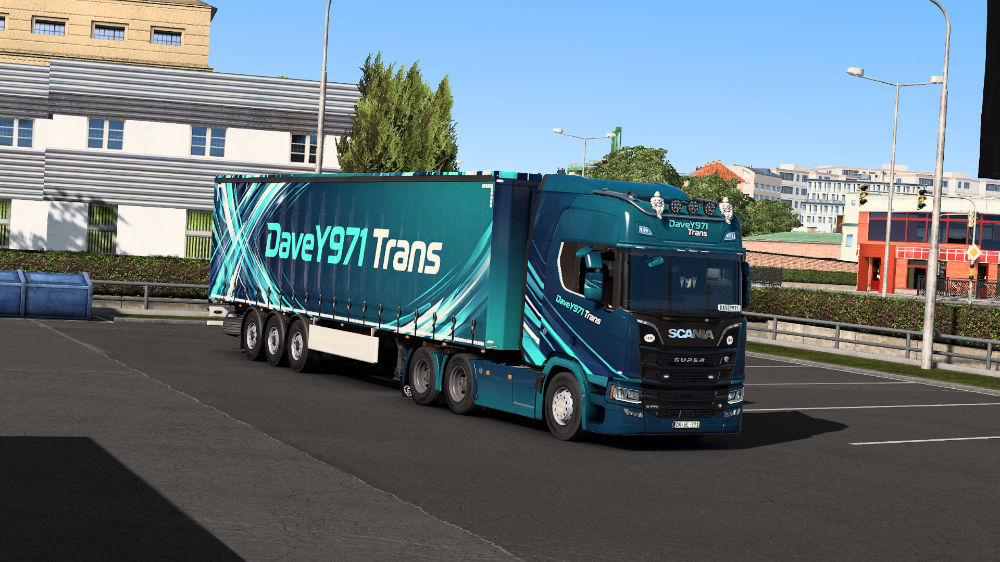
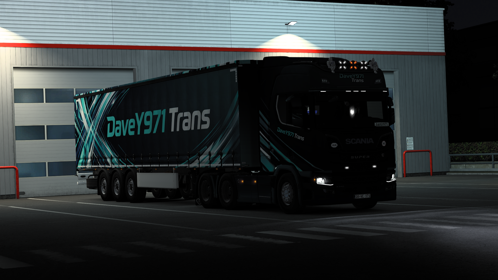
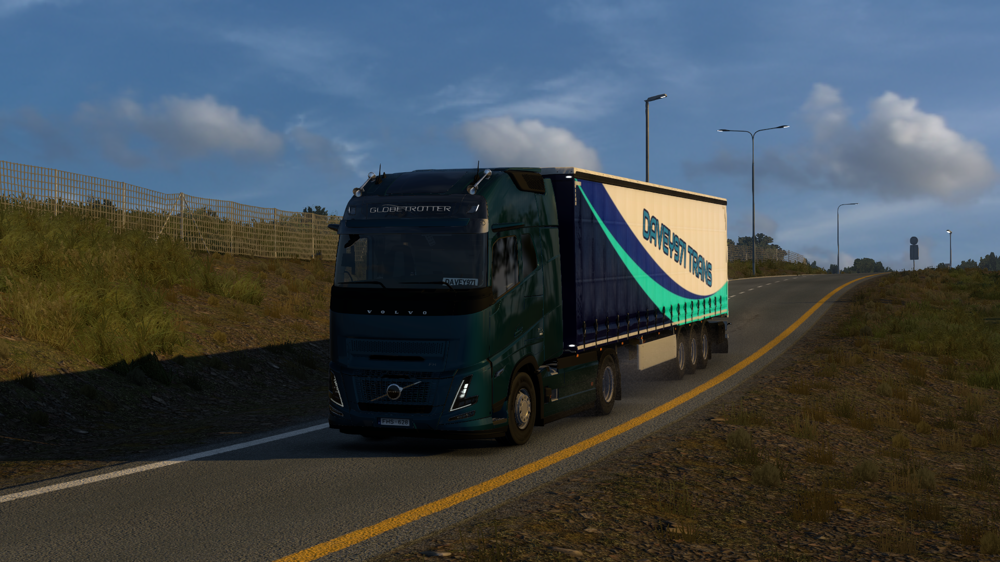
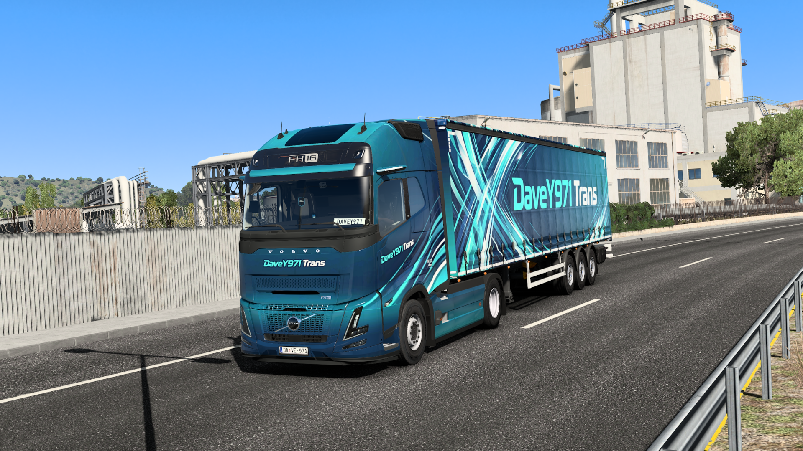

Hivatalosan is megjelent a DaveY971 Trans kamion és pótkocsi festés mod legújabb, 2.0-ás verziója. A projekt keretében egy teljesen új, modernebb és letisztultabb vizuális arculatot kapott a cég, amely szakít a korábbi verzióval és egy új szintre emeli a megjelenést. Emellett elindult a HIVATALOS DaveY971 Trans Virtuális cég!
Mod letöltéseEz a virtuális cég a DaveY971 YouTube csatorna és a hozzá tartozó közösség hivatalos otthona az ETS 2-ben. A célunk nem csupán a virtuális profit és a kilométerek hajszolása, hanem egy olyan összetartó, minőségi magyar ETS2 kamionos közösség kiépítése, ahol a tagok együtt gurulhatnak, konvojtársakat találhatnak, és kialakulhat egy nagyobb összetartó közösség a cég és a YT csatorna körül.
Nálunk a realizmus és a jó hangulat kéz a kézben jár. Ha eleged van a magányos fuvarokból, és szeretnél egy szervezett de barátságos csapat tagja lenni, nálunk a helyed! Kövesd a weboldalt a naprakész információkért és modokért!
Használd az alábbi gyorshivatkozásokat a modok és a közösségi kommunikációs központok eléréséhez.
A VTC a Virtual Trucking Company rövidítése. Az Euro Truck Simulator 2 (ETS2) és American Truck Simulator (ATS) világában ez egy olyan virtuális fuvarozó vállalatot jelent, amit a játékosok alapítanak, pont úgy modellezve mindent, mint a valóságban a valódi logisztikai cégeknél.
Külső programok (például a Trucky) a háttérben futva mérik a játékban megtett kilométereidet, az elszállított rakományokat, a fogyasztást, sőt még a sofőrök által okozott töréseket és károkat is.
Nemcsak céges ranglistákon versenyezhetünk más nemzetközi vagy hazai virtuális vállalatokkal, hanem egy igazi, összetartó csapatot alkotunk. Látjuk egymás statisztikáit, és közösen fejlesztjük a cég virtuális hírnevét és teljesítményét.
Hivatalosan is elérhetővé vált az új festéscsomag. A letöltések szekcióban már megtaláljátok a Steam Workshop linket.
Készítsétek a kamionokat, ugyan is hamarosan lehet számítani közös konvojokra! Indulási időpontok és részletek a Discord szerveren hamarosan.
Mivel most indult a VTC, így természetesen várjuk mindenki jelentkezését! Ha aktív vagy, tudod teljesíteni a követelményeket és szeretnél egy jó csapatot, küldd el a jelentkezésed még ma!
A cég tagjaként te is a csatornát és a közösséget képviseled az utakon. Kattints a pontokra a részletekért!
Örülünk, hogy szeretnél csatlakozni a Davey971 Trans csapatához! Mielőtt elküldenéd a jelentkezésedet, kérjük hogy a lenti szövegdobozban (a jelentkezési üzenetedben a Trucky felületén) röviden válaszold meg az alábbi pontokat. Ezzel segítesz nekünk megismerni téged, és felgyorsítani a felvételi folyamatot.
Írj nekünk pár mondatot a fentiek alapján, és a vezetőség hamarosan elbírálja a jelentkezésedet! Sok sikert!
Jelentkezés a Trucky VTC Hub-on



Megérkezett a 2.0-ás verzió! Teljesen új, modernebb és letisztultabb vizuális arculattal, amely új szintre emeli a DaveY971 Trans játékbeli megjelenését.